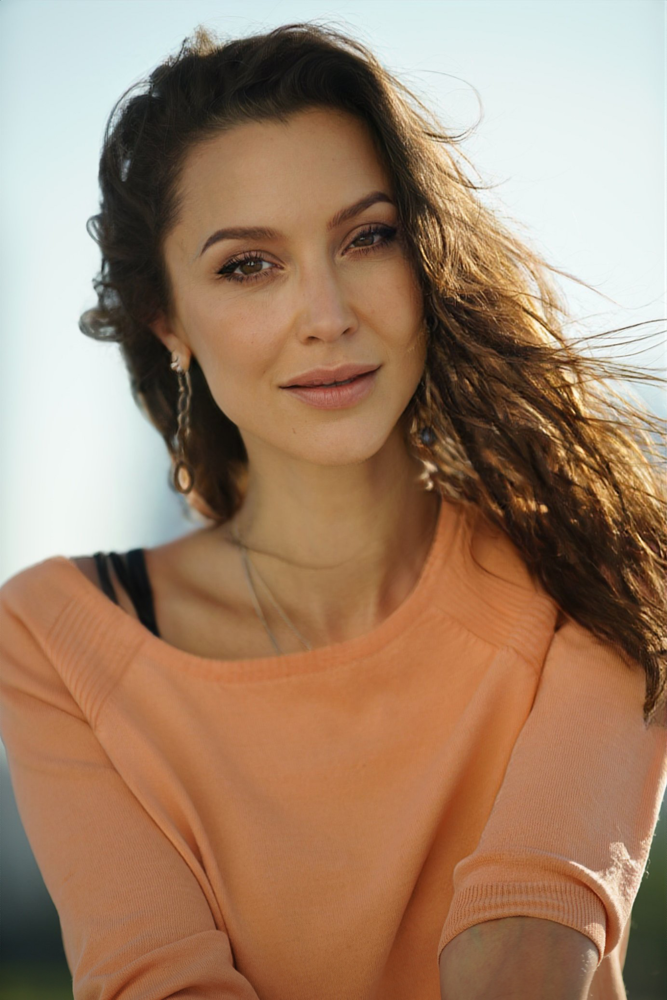

Практический курс, который учит переключаться между тревогой и фокусом — а не бороться с ними
Первый поток — совместная работа с нейропсихологом и педагогом с 25-летним опытом, по цене трети разовой консультации. 6 недель, группа 6–12 человек, живое внимание, а не конвейер.
Если сейчас вам физически тяжело и есть мысли о вреде себе — это важный блок ниже, а не курс.
"
Дело не в силе воли и не в характере. У мозга просто нет отработанного навыка переключения между тремя режимами — поэтому переключение происходит поздно и хаотично.
Метод «Карта трёх сетей»
Мозг работает в трёх режимах внимания. Курс учит замечать, в каком режиме вы находитесь сейчас, и осознанно переключаться.
Блуждание мыслей (DMN)
Сигналы и значимость (SN)
Фокус и действие (CEN)
Сеть блуждания мыслей (DMN) — включается, когда мозг не занят конкретной задачей: блуждание мыслей, воспоминания, тревожные петли.
Сеть сигналов и значимости (SN) — замечает, что происходит что-то важное, и переключает внимание на это.
Сеть фокуса и действия (CEN) — отвечает за целенаправленное внимание, планирование и решения под нагрузкой.
Этот курс для вас, если…
{{ item.text }}
Групповая практика подходит не всем — и это забота о безопасности, а не оценка вас.
Важно:не подходит при остром кризисе, суицидальном риске или психотических симптомах — в этих случаях нужна индивидуальная помощь специалиста.
Если во время встречи у кого-то из участников возникает острое состояние, ведущий переводит человека в отдельный формат поддержки и, при необходимости, помогает связаться с экстренной помощью. Групповая практика не заменяет кризисное сопровождение — и на этот случай есть чёткий протокол действий ведущего.
Программа — 6 модулей
{{ m.numLabel }}{{ m.title }}
Неделя {{ m.week }} курса.
Что это даёт
{{ b.text }}
Что будет, если ничего не менять
{{ t.period }}
{{ t.text }}
Автор курса

Нейропсихолог и педагог с 25-летним опытом практики. Адаптировала модель трёх сетей для группового формата на основе собственного клинического и преподавательского опыта.
Честно: курс как целостная программа проходит первичную обкатку. Это не «продукт с историей», а тщательно спроектированная программа на доказательных компонентах.
{{ s.num }}
{{ s.label }}
Почему я создала этот курс
За годы практики я снова и снова убеждалась в одном и том же: люди справляются с тревогой не потому, что стали сильнее духом, а потому что научились замечать, в каком режиме работает их внимание, и вовремя переключаться. Это первый поток курса — программа собрана из компонентов, которые я годами использую в индивидуальной работе, и теперь впервые адаптирована для группы.
На первой встрече мы не начинаем сразу с техник — сначала выстраиваем общий язык для того, что с вами происходит. Уже к концу первой недели у вас будет конкретный, применимый в моменте способ отличить блуждание мыслей от полезного размышления.
Тарифы
Индивидальная консультация нейропсихолога — от 4 000–6 000 ₽ за 60 минут. Здесь — 6 недель работы по цене одной-двух консультаций.
Я не обещаю, что вы точно избавитесь от тревоги, но гарантирую процесс: если вы посетили первые два занятия и формат не подошёл — я верну стоимость оставшихся занятий, за вычетом налогов и комиссий банка.
Осталось немного мест в потоке
Группа набирается небольшая — 6–12 человек.
Это первый поток курса. Мы собираем обезличенную обратную связь (бланки самодиагностики «до/после») для улучшения программы — участие в опросе добровольно и не влияет на доступ к занятиям.
{{ formError }}
Заявка принята
Мы свяжемся с вами в течение суток, чтобы обсудить ближайший поток.